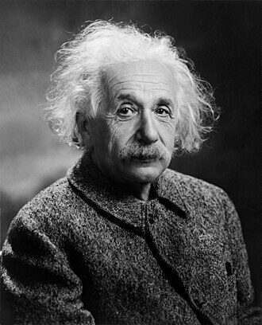

In January 1936, in a New Jersey courthouse, the most famous scientist in the world put his name to a government form declaring that he meant to become an American.

Albert Einstein left Germany in 1933 as the Nazis came to power, and never went back. He settled at the Institute for Advanced Study in Princeton, filed his first citizenship papers in 1936, and took the oath as an American in 1940 — one of the few immigrants whose surname became a byword for genius.
The document behind this story
Declaration of Intention for Albert Einstein — U.S. District Court (Petitions for Naturalization), 1936-01-15.
This is Einstein's "first papers." A Declaration of Intention is the statement an immigrant makes under oath that they intend to become a citizen and to renounce allegiance to any foreign state. Einstein filed his in a federal court in New Jersey on 15 January 1936; the original is held by the National Archives, which places it in the public domain. We cite it here rather than reproduce the scan, which we could not retrieve.
“As long as I have any choice, I will only stay in a country where political liberty, toleration, and equality of all citizens before the law are the rule.” Albert Einstein, public statement on leaving Germany, 10 March 1933 (item 8).
Einstein was born in Ulm, in the kingdom of Württemberg, in 1879, and grew up in Munich. But he finished his training across the border: in July 1900 he completed his studies at the Federal Polytechnic — the ETH — in Zurich with a teaching diploma. He became a Swiss citizen soon after, and kept that citizenship for the rest of his life.
In 1905, working as a clerk in the Swiss patent office in Bern, he published the papers that remade physics. He submitted his doctoral dissertation to the University of Zurich that spring; the faculty approved it in July 1905, and the degree was formally conferred on 15 January 1906.
Einstein held professorships in Zurich, Prague and Berlin, and in 1921 he was awarded the Nobel Prize in Physics. The citation named his discovery of the law of the photoelectric effect — not, as is often assumed, relativity. By the early 1930s he was the most recognisable scientist alive, and a Jew in a Germany turning openly and violently antisemitic.
Einstein was abroad — lecturing in the United States — when Hitler became chancellor in January 1933. He resigned from the Prussian Academy of Sciences, gave up his German citizenship, and resolved not to return. In a public statement that March he set the condition under which he would live anywhere, the sentence quoted above this story.
The Institute for Advanced Study, a new research centre in Princeton, had offered him a post. The Institute opened on 2 October 1933; Einstein, who had still been in Europe, crossed the Atlantic and arrived to take it up later that same month. He would live in Princeton for the rest of his life.
On 15 January 1936, Einstein filed his Declaration of Intention — an immigrant's sworn "first papers," the formal statement that he meant to become a citizen. The original is held by the National Archives. He took the oath of citizenship in 1940, keeping the Swiss citizenship he had held since young adulthood, so that he ended his life a citizen of two republics and no empire.
He used his fame as an American deliberately: for refugees fleeing the same Europe he had escaped, for civil rights, and against the misuse of the physics he had helped create. He died in Princeton in 1955.
Einstein's dates are garbled surprisingly often, and a museum should be exact. His Zurich diploma is dated 1900. His Zurich doctorate was conferred in January 1906 — not 1905, the year the dissertation was written and approved; the two are a year apart and both are frequently misreported. He came to the United States to stay in 1933, the year the Institute opened, not in 1932, when he was only a visitor. He was born in Ulm in 1879 and died in Princeton on 18 April 1955.
Every fact on this page comes from one of these 8 items. Each links to the institution that holds it and gives that institution’s own rights wording.
The anchor: the face that became shorthand for genius.
Rights, in the institution’s words: Commons labels this image public domain in the United States; country-specific restrictions are described on the file page.
naturalization record
Einstein’s sworn “first papers,” filed 15 January 1936. The National Archives notes he became a U.S. citizen in 1940.
Rights, in the institution’s words: Public Domain, Free of Known Copyright Restrictions (CC Public Domain Mark 1.0).
reference entry
“In July 1900 he completed his studies at the Polytechnic Institute with a diploma.” The source for the 1900 diploma.
Rights, in the institution’s words: (not checked; cited only)
reference entry
The dissertation was completed 30 April 1905 and the doctorate conferred 15 January 1906 — the basis for giving 1906, not 1905, as the year of his Zurich doctorate.
Rights, in the institution’s words: (not checked; cited only)
reference entry
Dissertation approved by the Philosophy II faculty 27 July 1905; “the degree was formally awarded January 15, 1906.”
Rights, in the institution’s words: (not checked; cited only)
record
Awarded to Albert Einstein; the citation names his discovery of the law of the photoelectric effect, not relativity.
Rights, in the institution’s words: (not checked; cited only)
reference entry
The Institute opened on 2 October 1933; Einstein, still in Europe, arrived to take up his post later that month — the basis for giving 1933, not 1932, as the year he came to stay.
Rights, in the institution’s words: (not checked; cited only)
statement
Source of the quotation above: Einstein’s public statement of 10 March 1933, after the Reichstag Fire, on the conditions under which he would live anywhere.
Rights, in the institution’s words: (not checked; cited only)
First-person recordings and expert perspectives held by other museums, archives and media organisations. Each links to the institution that holds it.
Audio
A recording of Einstein speaking, catalogued by the American Institute of Physics.
Link only: the recording stays with American Institute of Physics, Niels Bohr Library & Archives. View at American Institute of Physics, Niels Bohr Library & Archives
Audio
A 1940 recording of Einstein speaking, catalogued by the American Institute of Physics.
Link only: the recording stays with American Institute of Physics, Niels Bohr Library & Archives. View at American Institute of Physics, Niels Bohr Library & Archives